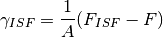

Stacking faults in fcc metals¶
Calculation of intrinsic stacking fault energies¶
Notes from this section are fro Chandran and Sondhi [chandran2001_Ni_sf].
The [111] intrinsic stacking fault (ISF) in the fcc structure is created by removing one layer, which changes the sequence from ABCA to ABCB. The is formally defined as

where  and are the free-energies of the structure with and without a stacking fault, respectively, and
and are the free-energies of the structure with and without a stacking fault, respectively, and  is the area of the faulted region. When these calculations are done at , the free energies and be replaces with
is the area of the faulted region. When these calculations are done at , the free energies and be replaces with  and
and  .
.
The energies and can be calculated using first-principle methods using the supercell method.
ABCABCABC
ABC|BCA|CAB|
ABCABCA|CABCABC